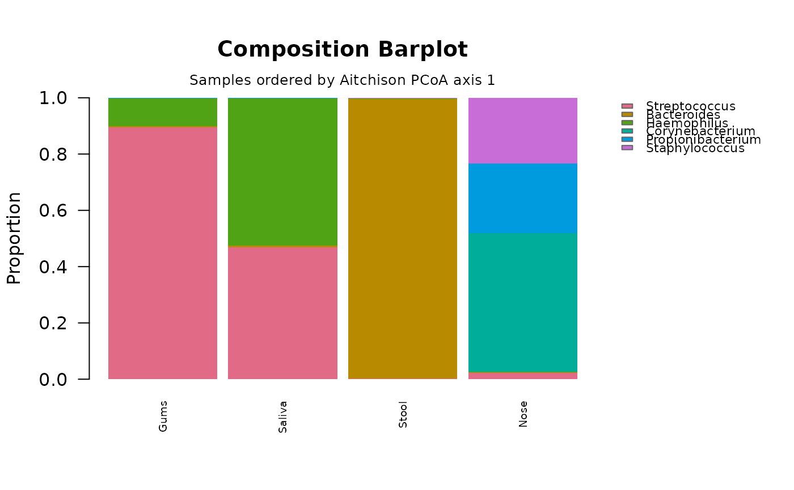
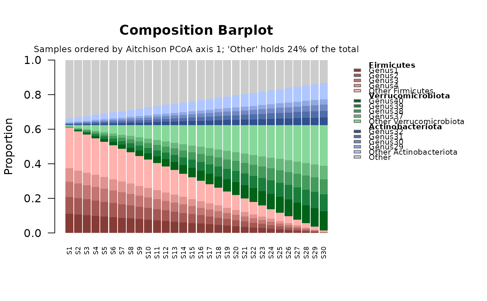
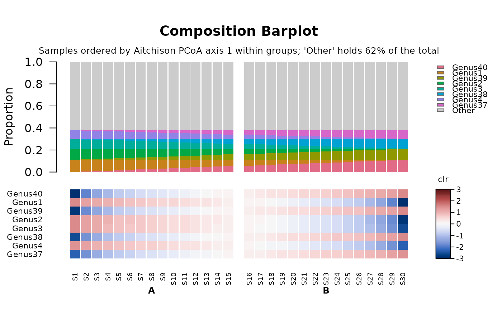

Stacked bars of relative abundance, one per sample, drawn so that they
can be read: the samples ordered by their compositions (neighbouring bars
are similar), the most abundant features on the common baseline, and,
with feature_groups, one hue per higher-level group (such as a phylum)
with shades for its most abundant members (microshades' idea; Dahl et al.
2022). An optional heatmap of centred log ratios below the bars gives
every drawn feature its own aligned row.
Usage
composition_barplot(
counts,
groups = NULL,
data = NULL,
feature_groups = NULL,
n_features = NULL,
n_feature_groups = 5L,
clust = "pcoa",
heatmap = FALSE,
margin = 1L,
pseudocount = NULL,
legend = "right",
col = NULL,
cpus = n_cpus(),
...
)Arguments
- counts
A count table (samples \(\times\) features), or proportions; see Input Types. Samples whose counts are all zero are left out, with a warning.
- groups
Draws the samples in panels, one per group, separated by a gap and labelled beneath: the name of a column of
data, or a vector with one value per sample (matched by name when both are named, as forpermanova()). Every distinct value is a group, in the order of a factor's levels or else sorted;NAis a group of its own. Samples are never averaged. Default:NULL, no panels.- data
A data frame of sample metadata, with one row per sample, when
groupsnames one of its columns.- feature_groups
Each feature's higher-level group, such as its phylum: a vector with one value per feature, matched to the features by name when its values are named by every feature of
counts, else by position.NAis the group"Unassigned". Default:NULL, no grouping.- n_features
How many features to draw: without
feature_groups, then_featureswith the largest mean proportion (default12); with them, then_featuresmost abundant members of each drawn group (default4, microshades' maximum). A whole number of at least 1, orInffor all.- n_feature_groups
With
feature_groups, how many groups to draw in colour: those with the largest mean proportion. The others are pooled as"Other". A whole number of at least 1, orInf. Default:5.- clust
How to order the samples (within each group, with
groups), from theiraitchison()distances:"pcoa"(the default) along the first axis ofpcoa(), which is the first principal component of their centred log ratios; one ofstats::hclust()'s linkage methods ("average","complete","single","ward.D","ward.D2","mcquitty","median"or"centroid") for its leaf order; or"none",FALSEorNULLfor their input order. The same values asbeta_div()'sclust.- heatmap
Also draw, below the bars, a heatmap of the drawn features' centred log ratios (see Details). Default:
FALSE.- margin
The margin containing samples.
1if samples are rows,2if samples are columns. Ignored whencountsis a special object class (e.g.phyloseq). Default:1- pseudocount
Added to every count before taking logs, for the ordering and the heatmap only: the bars show the proportions themselves. Default:
NULL, by the rule every log-ratio method in ecodive shares: none whencountshas no zeros, else half its smallest non-zero value. Unlike elsewhere, no warning is given, since the pseudocount only orders the bars and colours the heatmap.- legend
Where to draw the legend, outside the plot:
"right"(the default),"bottom", orNULL(orFALSE) for none.- col
Colours to replace the defaults: one per drawn segment, in stack order (bottom to top), or named by segment (see Value) to replace only those.
- cpus
How many parallel processing threads should be used. The default,
n_cpus(), is the CPU cores this R process may use, within any limits set on it. Results are the same for anycpus.- ...
Passed on to
graphics::barplot(), such asmain,ylaborcex.names.subreplaces the subtitle.
Value
Invisibly, a list of what was drawn:
proportions: a matrix of the segments (rows, in stack order from the bottom, named by feature,"Other <group>"or"Other") by the drawn samples (columns, in their drawn order). Each column sums to 1.col: the segments' colours, named by segment.order: the drawn samples' positions incounts, in their drawn order.x: the bars' positions on the x axis, asgraphics::barplot()returns them.clr: withheatmap = TRUE, the heatmap's values (drawn features by drawn samples).
Details
The bars show proportions only: each sample closed to 1. They are not
a compositional analysis, and they say nothing about how much of anything
a sample held. For absolute loads, scale the counts with qmp_scale()
and draw them with graphics::barplot(); for compositional readings of
the same samples, see the heatmap (heatmap = TRUE), aitchison()
distances with pcoa(), the covariance biplot of pca() with norm = "clr" (plot(..., scaling = "covariance")), ternary_plot() for three
parts at a time, and the planned variation_array().
Which features. Each sample's counts are divided by their sum, and
the features are ranked by their mean proportion over the samples (ties
in their order in counts).
Without
feature_groups: then_featuresmost abundant features are drawn, and the rest summed into"Other".With
feature_groups: then_feature_groupsgroups with the largest mean proportion (the sum of their members') are drawn; within each, itsn_featuresmost abundant members, and the rest of the group as"Other <group>". The remaining groups are pooled as"Other". microshades ranks by the sum over samples instead, which ranks the same.
Features whose proportion is zero in every sample are never drawn, and segments that would hold nothing are left out.
Stack order, from the bottom: the drawn groups from most to least
abundant, within each its members from most to least abundant and then
"Other <group>"; "Other" on top. Without groups, the features from
most to least abundant, then "Other". The legend lists the segments
from the top down in this order (the most abundant first), each group's
under its name in bold.
Colours. Group \(g\) of the \(G\) drawn has hue \(h_g = 15 +
360 (g - 1) / G\); its \(k\) drawn members are shaded
hcl(h_g, c = 55, l = seq(35, 80, length.out = k + 1)), darkest for
the most abundant, and its "Other <group>" takes the lightest. Without
groups, the features take grDevices::hcl.colors()'s "Dark 3"
palette. "Other" is "grey80". These follow microshades' scheme (one
hue per group, shades from dark to light, the group's "Other" lightest),
re-derived in HCL rather than copied. Distinct hues with a luminance ramp
are reasonably robust to colour-vision deficiencies; for strict needs,
give col.
Sample order. By clust, from the samples' aitchison() distances
(with pseudocount), as beta_div() orders them (clust = "pcoa" is
order(pcoa(aitchison(counts))[, 1])). With groups, the samples are
then sorted by group, keeping that order within each group. The
subtitle says how the samples are ordered, and how much of the total
"Other" holds (its mean proportion over the samples).
Heatmap. With heatmap = TRUE, the drawn features' centred log
ratios: each sample's clr (\(\log(x + c)\) minus the sample's mean of
those logs over every feature, with \(c\) the pseudocount), minus
the feature's mean clr over the drawn samples. Red is above the
feature's average, blue below, on a scale symmetric about 0. Rows are in
the legend's order and columns line up with the bars. This is the
compositional (CoDa-consistent) reading of the same samples: a
feature's row compares it with the sample's geometric mean, which does
not depend on how the bars close each sample to 1.
Up to 60 samples are labelled with their names; more are drawn without names, and with no space between bars (except between groups).
Why stacked bars mislead, and what this one does
No peer-reviewed paper critiques microbiome stacked bars on their own: the critiques below come from the motivations of tool papers, and from tutorials and forum threads.
| Critique (source) | How this plot answers it |
| Segments' lengths are hard to compare across bars (Peeters et al. 2024) | Samples are ordered by their compositions, so neighbouring bars are similar and gradients read as gradients; the most abundant feature sits on the common baseline; heatmap = TRUE gives every feature its own aligned row |
| "Other" hides rare taxa, and many taxa make colour hard (Dahl et al. 2022; Peeters et al. 2024) | Hierarchical shading: one hue per group, shades for its top members, the group's own "Other" lightest; the subtitle says how much "Other" holds |
| Averaging samples into one bar per group distorts (tutorials and forum threads, not peer reviewed) | Never averaged: one bar per sample, and groups are panels |
| Closure hides absolute load (Gloor et al. 2017) | The bars are proportions only; for loads, use qmp_scale() and a plain graphics::barplot() |
| Stacked bars ignore phylogeny and differential abundance (Cuisiniere & Santos 2024) | Out of scope: see plot.ecodive_ord() and the plots of da_test()'s results |
References
Dahl, E. M., Neer, E., Bowie, K. R., Leung, E. T., & Karstens, L. (2022). microshades: an R package for improving color accessibility and organization of microbiome data. Microbiology Resource Announcements, 11, e00795-22. doi:10.1128/mra.00795-22
Peeters, J., Bot, D. M., Rovelo Ruiz, G., & Aerts, J. (2024). Snowflake: visualizing microbiome abundance tables as multivariate bipartite graphs. Frontiers in Bioinformatics, 4, 1331043. doi:10.3389/fbinf.2024.1331043
Cuisiniere, T., & Santos, M. M. (2024). StackbarExtended: a user-friendly stacked bar-plot representation incorporating phylogenetic information and microbiota differential abundance analysis. F1000Research. doi:10.12688/f1000research.151662.1
Gloor, G. B., Macklaim, J. M., Pawlowsky-Glahn, V., & Egozcue, J. J. (2017). Microbiome datasets are compositional: and this is not optional. Frontiers in Microbiology, 8, 2224. doi:10.3389/fmicb.2017.02224
Examples
# Four body sites (ex_counts has samples in rows).
composition_barplot(ex_counts)

# A larger table: 30 samples along a gradient, 40 features in 5 phyla.
n <- 30; p <- 40
grad <- seq(0, 1, length.out = n)
counts <- round(outer(1 - grad, 2^(-(1:p) / 6)) * 400 +
outer(grad, 2^(-(p:1) / 6)) * 400)
dimnames(counts) <- list(paste0('S', 1:n), paste0('Genus', 1:p))
counts <- counts[order((1:n * 7) %% n), ] # shuffled
phylum <- rep(c('Firmicutes', 'Bacteroidota', 'Proteobacteria',
'Actinobacteriota', 'Verrucomicrobiota'), each = 8)
composition_barplot(counts, feature_groups = phylum, n_feature_groups = 3)

# With panels by group, and the clr heatmap below.
site <- ifelse(as.integer(sub('S', '', rownames(counts))) <= n / 2, 'A', 'B')
res <- composition_barplot(counts, groups = site, heatmap = TRUE, n_features = 8)

res$proportions[, 1:4]
#> S1 S2 S3 S4
#> Genus40 0.001237624 0.004944376 0.008666048 0.012372410
#> Genus1 0.110148515 0.106304079 0.102754565 0.098979276
#> Genus39 0.001237624 0.004635352 0.008047044 0.011444479
#> Genus2 0.098081683 0.094870210 0.091612504 0.088153418
#> Genus3 0.087561881 0.084363412 0.081708449 0.078564800
#> Genus38 0.001547030 0.004635352 0.007428041 0.010516548
#> Genus4 0.077970297 0.075092707 0.072732900 0.069904114
#> Genus37 0.001856436 0.004326329 0.007118539 0.009588617
#> Other 0.620358911 0.620828183 0.619931910 0.620476338